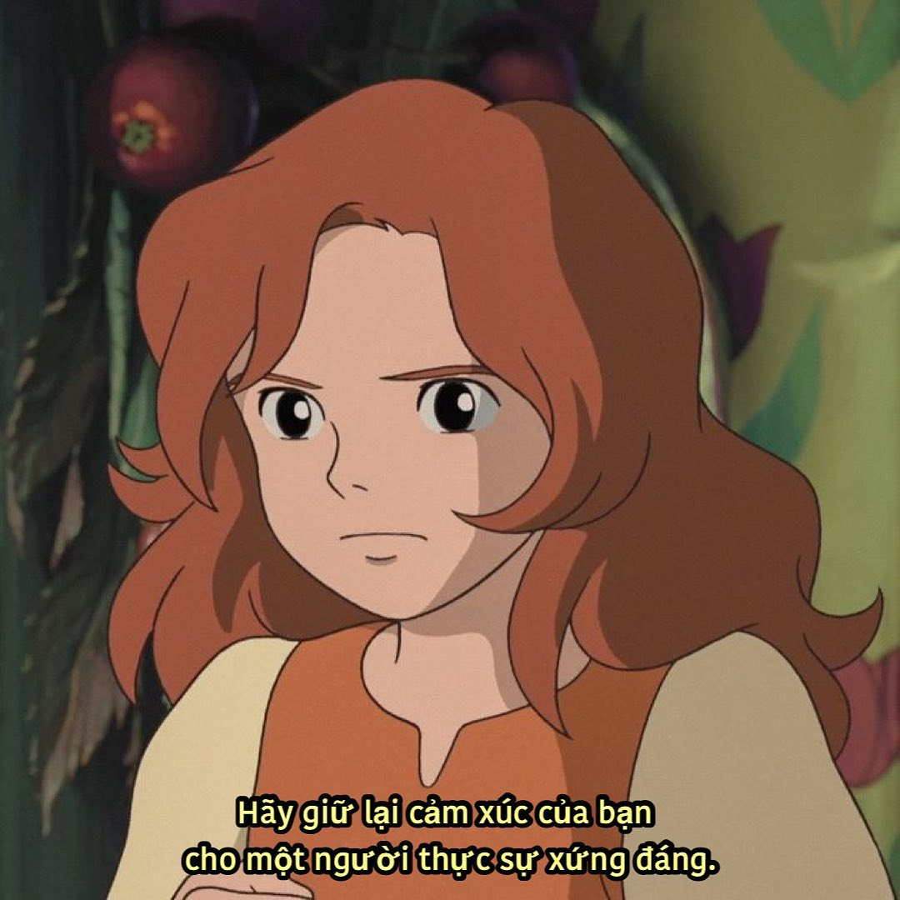

Vài dòng thông tin về tôi
Tôi tên là Nguyễn Trọng Nghĩa , là một người với nhiều ước mơ và khát vọng từ thuở bé, nhưng tiếc thay hầu hết những ước mơ đó đến nay vẫn chưa trở thành hiện thực. Tôi hiện đang là sinh viên ngành Kĩ Thuật Phần Mềm tại trường đại học Công Nghiệp Hà Nội.Và đang trong giai đoạn nghèo túng
Mốc thời gian
Tôi sinh ngày 05/08/2004, tại quê hương Bắc Giang yêu dấu. Sinh ra và lớn lên ở đây, giờ đi xa mới thấy nhớ quê hương lạ.
Năm 2022, tôi tốt nghiệp THPT tại trường THPT Hiệp Hòa số 4 và cũng bắt đầu cuộc sống xa nhà để theo đuổi ước mơ đại học từ đây.
Tính cách
Tôi là người trầm tính, ít nói, sống nội tâm, yêu màu hồng (à mà thực ra là màu xanh, ghi cho nó vần tý), đặc biệt ghét sự dối trá vì đã từng bị lừa dối.
Người ta mới gặp tôi sẽ nghĩ tôi là một người ít nói, quen rồi mới biết đã ít nói lại còn rất chán nữa chứ.
Sở thích, đam mê
Sở thích thì nhiều vô cùng nhưng có lẽ câu cá là thú vui lớn nhất của tôi thuở thiếu thời. Bây giờ vẫn vậy nhưng không có thời gian nữa.
Có niềm đam mê lớn với công nghệ, thích mày mò vọc vạch và wap/web là một phần của niềm đam mê ấy. Nhưng giờ tôi vẫn phế phải đi COPY code để cho oai